Tutorial 3: Phylogenetics Pipeline: Data Visualization and IUCN Summaries
Beatriz M. Meriño
2026-07-23
Source:vignettes/tutorial-3-cactus-phylogeny-visualization.Rmd
tutorial-3-cactus-phylogeny-visualization.RmdAbstract
This tutorial represents the final stage of the core phylogenetic
reconstruction workflow implemented in
PhyloCactus, focusing on the integration,
visualization, and biological interpretation of the inferred
evolutionary framework. Following the assembly of the multilocus
supermatrix, maximum-likelihood inference, branch support assessment,
and divergence time estimation described in Tutorial
1 and Tutorial
2, this module transforms the resulting phylogenetic outputs into an
integrative evolutionary resource.
In Module 11, phylogenetic results are enriched with external biological information by integrating species-level metadata and conservation assessments from the IUCN Red List. This step generates a comprehensive evolutionary registry that links molecular sampling effort, taxonomic validation, distributional information, and conservation status. These integrated data provide the foundation for evaluating biases in genomic representation, identifying threatened evolutionary lineages, and exploring patterns of conservation vulnerability across the cactus tree of life.
In Module 12, the final phylogenetic products are visualized and prepared for downstream comparative analyses. The maximum likelihood topology is displayed together with branch support values, while the time calibrated chronogram derived from penalized likelihood analyses is visualized with node age uncertainty intervals obtained from dated temporal bootstrap replicates. These outputs provide publication ready representations of both phylogenetic relationships and evolutionary timescales.
Together, this tutorial completes the construction of a reproducible phylogenomic framework for Cactaceae, integrating evolutionary history, temporal diversification, and conservation information into a unified analytical resource suitable for macroevolutionary, biogeographic, and conservation studies.
Complete Pipeline Execution Workflow
Setup: Creating a Clean Workspace
Before proceeding, ensure you have the required packages installed
and set up. We rely on the rredlist package to interact
securely with the IUCN Red List API.
To install the required dependencies:
required_pkgs <- c("dplyr", "tidyr", "stringr", "readr", "ggplot2", "forcats", "purrr", "scales", "rredlist")
new_pkgs <- required_pkgs[!(required_pkgs %in% installed.packages()[,"Package"])]
if(length(new_pkgs)) install.packages(new_pkgs)IUCN Red List API Access: To retrieve threat
categories automatically, generate a free API token from the IUCN Red List API
Token Generation Page, submit the request form, and store the
resulting key in your .Renviron file using
usethis::edit_r_environ() under the variable
IUCN_REDLIST_KEY="your_api_key".
Data Setup & Pre-processing
To quickly run the analyses in this module, you can copy the entire executable script to your tutorial directory:
tutorial_dir <- "~/Desktop/PhyloCactus_Tutorial"
setwd(tutorial_dir)
# Copy the entire tutorial script for easy execution
file.copy(
system.file("scripts", "tutorial-3-cactus-phylogeny-visualization.R", package = "PhyloCactus"),
file.path(tutorial_dir, "tutorial-3-cactus-phylogeny-visualization.R")
)Module 11: Data Visualization and IUCN Enrichment
This vignette assumes that you have completed Tutorial 2: Inference & Dating. Following the completion of maximum likelihood phylogenetic inference, branch support estimation, and divergence time reconstruction, this module focuses on enriching the resulting evolutionary framework with biological metadata and generating comprehensive visual summaries of the final phylogenomic dataset.
The Scientific Importance of an Integrative Evolutionary Registry
At this stage, PhyloCactus generates an integrative
phylogenetic and conservation registry that links evolutionary
relationships with complementary biological information, including
taxonomic validation, geographic distribution, habitat associations,
IUCN conservation assessments, and molecular sampling coverage.
The family Cactaceae contains numerous geographically restricted endemics and highly vulnerable evolutionary lineages affected by habitat loss, anthropogenic disturbance, and climate-driven environmental change.
By integrating conservation assessments directly with phylogenetic relationships, this framework enables the identification of Evolutionarily Distinct and Globally Endangered (EDGE) lineages, the evaluation of conservation gaps across evolutionary history, and the detection of biases in current molecular sampling efforts.
Because reconciling taxonomic identities, molecular datasets, and
conservation metadata requires extensive data harmonization,
PhyloCactus provides dedicated API wrappers
(get_iucn_data(sp_name)) to facilitate reproducible
retrieval and integration of species-level information from the IUCN Red
List database.
Now, let’s load our libraries and prepare the dataset outputs from previous Modules.
# ============================================================
# LIBRARIES
# ============================================================
library(PhyloCactus)
library(dplyr)
library(tidyr)
library(stringr)
library(readr)
library(ggplot2)
library(forcats)
library(purrr)
library(scales)
dir.create("9_Visualization/figures", showWarnings = FALSE, recursive = TRUE)
dir.create("9_Visualization/tables", showWarnings = FALSE, recursive = TRUE)
# ============================================================
# INPUT FILES (Ensure these exist from your Tutorial 1 run)
# ============================================================
species_file <- "6_Concatenated/final_tables/TABLE_final_species_alignment_summary.csv"
output_file <- "9_Visualization/tables/TABLE_species_all_data.csv"
marker_stats_file <- "6_Concatenated/final_tables/TABLE_marker_statistics.csv"
marker_ranges_file <- "6_Concatenated/final_tables/TABLE_marker_ranges.tsv"
accepted_list_file <- system.file("extdata", "CactaceaeFullList_accepted.csv", package = "PhyloCactus")
supp_tree_file <- system.file("extdata", "cactus_support.raxml.support", package = "PhyloCactus")
# ============================================================
# LOAD SPECIES TABLE & ACCEPTED CHECKLIST
# ============================================================
message("Reading species genetics table...")
species_summary <- read_csv(species_file, show_col_types = FALSE) %>%
mutate(species_clean = str_replace_all(species, "_", " "))
message("Reading accepted checklist...")
accepted_list <- read.csv(accepted_list_file, stringsAsFactors = FALSE)
accepted_species_table <- accepted_list %>%
filter(RANK == "Species") %>%
mutate(pureName = str_squish(as.character(pureName)),
fullName = str_squish(as.character(fullName))) %>%
filter(!str_detect(pureName, regex("\\b(subsp|ssp|var|forma|f\\.|subg|sect|ser|cf\\.|aff\\.|sp\\.|spp\\.|nr\\.)\\b|×|\\bx\\b", ignore_case = TRUE))) %>%
filter(str_detect(pureName, "^[A-Z][a-zA-Z-]+\\s[a-z-]+$")) %>%
mutate(species = str_replace_all(pureName, " ", "_")) %>%
select(species, checklist_pureName = pureName, checklist_fullName = fullName,
checklist_author = author, checklist_rank = RANK, checklist_taxon = taxon, checklist_uuid = uuid) %>%
distinct()
message("Reading phylogeny tree to get tips...")
ml_tree_tips <- ape::read.tree(supp_tree_file)$tip.label
message("Merging checklist metadata...")
species_summary <- species_summary %>%
full_join(accepted_species_table, by = "species") %>%
mutate(
species_clean = if_else(is.na(species_clean), str_replace_all(species, "_", " "), species_clean),
has_sequences = !is.na(species_class),
in_phylogeny = species %in% ml_tree_tips,
is_outgroup = if_else(has_sequences, species_class == "outgroup", FALSE),
is_ingroup = if_else(has_sequences, species_class == "ingroup", !is_outgroup),
accepted_in_checklist = !is.na(checklist_pureName),
accepted_or_outgroup = accepted_in_checklist | is_outgroup,
record_status = case_when(
is_outgroup ~ "accepted_outgroup",
in_phylogeny & accepted_in_checklist ~ "sampled_ingroup",
in_phylogeny & !accepted_in_checklist ~ "rejected_ingroup_in_tree",
has_sequences & accepted_in_checklist ~ "sequenced_not_in_tree",
has_sequences & !accepted_in_checklist ~ "rejected_ingroup_no_tree",
!has_sequences & accepted_in_checklist ~ "unsampled_ingroup",
TRUE ~ "other"
)
)IUCN Metadata Enrichment
The integration of conservation information represents an essential
step for connecting phylogenomic reconstruction with biological
interpretation. In this module, PhyloCactus retrieves
species-level conservation assessments from the IUCN Red List
database through the rredlist API interface and
integrates these records with the final phylogenetic dataset.
The enrichment process links each taxon included in the molecular framework with standardized conservation attributes, including IUCN category, assessment status, endemic distribution information, habitat associations, and documented threats. This approach allows researchers to evaluate whether evolutionary diversity is adequately represented within conservation assessments and to identify potential mismatches between phylogenetic distinctiveness and extinction risk.
Because taxonomic discrepancies frequently occur between molecular datasets and external biodiversity databases, the workflow first performs taxonomic reconciliation against the accepted species checklist before retrieving conservation information. Only validated species level names are queried against the IUCN API, reducing false matches and ensuring that conservation metadata are associated with the appropriate evolutionary units.
The resulting enriched table
(TABLE_species_all_data.csv) represents the integrated
species registry used throughout the visualization section. This
resource combines phylogenetic placement, molecular sampling
information, taxonomic validation, and conservation attributes into a
single reproducible dataset for downstream comparative analyses.
# ============================================================
# RUN IUCN EXTRACTION
# ============================================================
# Extract IUCN data for the species list.
# Note: subsetting [1:20] here just to avoid excessive API waits.
message("Extracting IUCN data...")
iucn_data <- map_dfr(species_summary$species_clean[1:20], PhyloCactus::get_iucn_data)
message("Building final table...")
species_summary_iucn <- species_summary %>%
left_join(iucn_data, by = "species_clean")
message("Exporting final table...")
write_csv(species_summary_iucn, output_file)Data Visualization
Following the integration of phylogenetic and conservation metadata, this section generates a comprehensive visualization framework to evaluate the structure, completeness, and biological composition of the final dataset.
The visualization workflow summarizes multiple dimensions of the phylogenetic reconstruction, including species representation, molecular marker coverage, supermatrix composition, phylogenetic sampling completeness, and conservation patterns.
All graphical outputs are generated using ggplot2
workflows and are designed to support both exploratory data analysis and
the preparation of publication quality figures for evolutionary and
conservation studies.
library(PhyloCactus)
library(dplyr)
library(tidyr)
library(stringr)
library(readr)
library(ggplot2)
library(forcats)
library(purrr)
library(scales)
# Load previously written analysis files
# In a real run, these would be loaded from your "9_Visualization" folder.
# Here we load them from the package's extdata folder to render the vignette.
species_summary_iucn <- read_csv(system.file("extdata", "TABLE_species_all_data.csv", package = "PhyloCactus"), show_col_types = FALSE)
marker_stats <- read_csv(system.file("extdata", "TABLE_marker_statistics.csv", package = "PhyloCactus"), show_col_types = FALSE)
marker_cols <- marker_stats$marker
# Data Summary Table Generation
TABLE_dataset_summary <- tibble(
metric = c("Total ingroup species in checklist", "Total species with sequences",
"Ingroup species with sequences", "Outgroup species with sequences",
"Ingroup species in final phylogeny", "Outgroup species in final phylogeny",
"Ingroup species mapped to IUCN assessment", "Ingroup species without IUCN assessment",
"Ingroup species in phylogeny with IUCN assessment",
"Threatened species in phylogeny (VU/EN/CR) (Ingroup)", "Endemic species in phylogeny (Ingroup)"),
value = c(sum(species_summary_iucn$accepted_in_checklist, na.rm = TRUE),
sum(species_summary_iucn$has_sequences, na.rm = TRUE),
sum(species_summary_iucn$is_ingroup & species_summary_iucn$has_sequences, na.rm = TRUE),
sum(species_summary_iucn$is_outgroup & species_summary_iucn$has_sequences, na.rm = TRUE),
sum(species_summary_iucn$in_phylogeny & species_summary_iucn$is_ingroup, na.rm = TRUE),
sum(species_summary_iucn$in_phylogeny & species_summary_iucn$is_outgroup, na.rm = TRUE),
sum(species_summary_iucn$is_ingroup & species_summary_iucn$iucn_found == TRUE, na.rm = TRUE),
sum(species_summary_iucn$is_ingroup & (is.na(species_summary_iucn$iucn_found) | species_summary_iucn$iucn_found == FALSE), na.rm = TRUE),
sum(species_summary_iucn$in_phylogeny & species_summary_iucn$is_ingroup & species_summary_iucn$iucn_found == TRUE, na.rm = TRUE),
sum(species_summary_iucn$in_phylogeny & species_summary_iucn$is_ingroup & species_summary_iucn$iucn_category %in% c("VU", "EN", "CR"), na.rm = TRUE),
sum(species_summary_iucn$in_phylogeny & species_summary_iucn$is_ingroup & species_summary_iucn$iucn_is_endemic == TRUE, na.rm = TRUE))
)
TABLE_dataset_summary
#> # A tibble: 11 × 2
#> metric value
#> <chr> <int>
#> 1 Total ingroup species in checklist 2818
#> 2 Total species with sequences 1006
#> 3 Ingroup species with sequences 976
#> 4 Outgroup species with sequences 30
#> 5 Ingroup species in final phylogeny 956
#> 6 Outgroup species in final phylogeny 30
#> 7 Ingroup species mapped to IUCN assessment 1132
#> 8 Ingroup species without IUCN assessment 1686
#> 9 Ingroup species in phylogeny with IUCN assessment 721
#> 10 Threatened species in phylogeny (VU/EN/CR) (Ingroup) 181
#> 11 Endemic species in phylogeny (Ingroup) 534Figure 1: Species Composition
This figure summarizes the taxonomic composition of the integrated phylogenetic dataset after reconciliation between the accepted species checklist, available molecular sequences, and the final phylogenetic reconstruction.
Species are categorized according to their representation within the workflow, including validated taxa incorporated into the phylogeny, sequenced taxa not recovered in the final tree, accepted taxa lacking molecular data, and outgroup lineages.
p1 <- ggplot(species_summary_iucn %>% filter(accepted_or_outgroup) %>% count(record_status), aes(x = record_status, y = n)) +
geom_col(width = 0.7) + coord_flip() + theme_minimal(base_size = 12) +
labs(title = "Species Composition (Phylogeny vs Checklist)", x = NULL, y = "Number of species") + theme(legend.position = "none")
print(p1)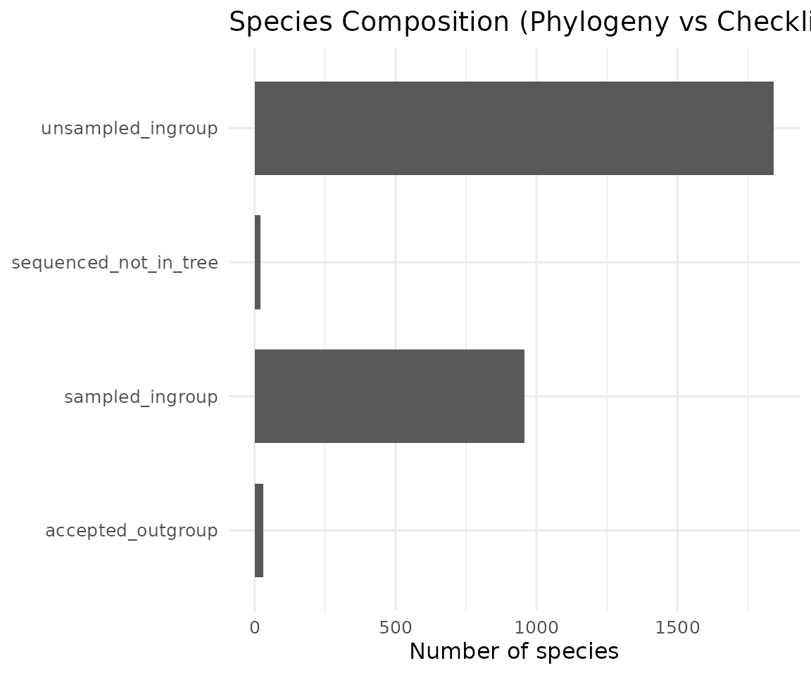
Figure 2: Marker Coverage
This figure summarizes the taxonomic representation of each molecular marker included in the final phylogenetic dataset by showing the number of species with available sequence information for each locus.
p2 <- ggplot(marker_stats, aes(x = reorder(marker, n_taxa), y = n_taxa)) +
geom_col() + coord_flip() + theme_minimal(base_size = 12) +
labs(title = "Marker Coverage Across Species", x = "Marker", y = "Number of species")
print(p2)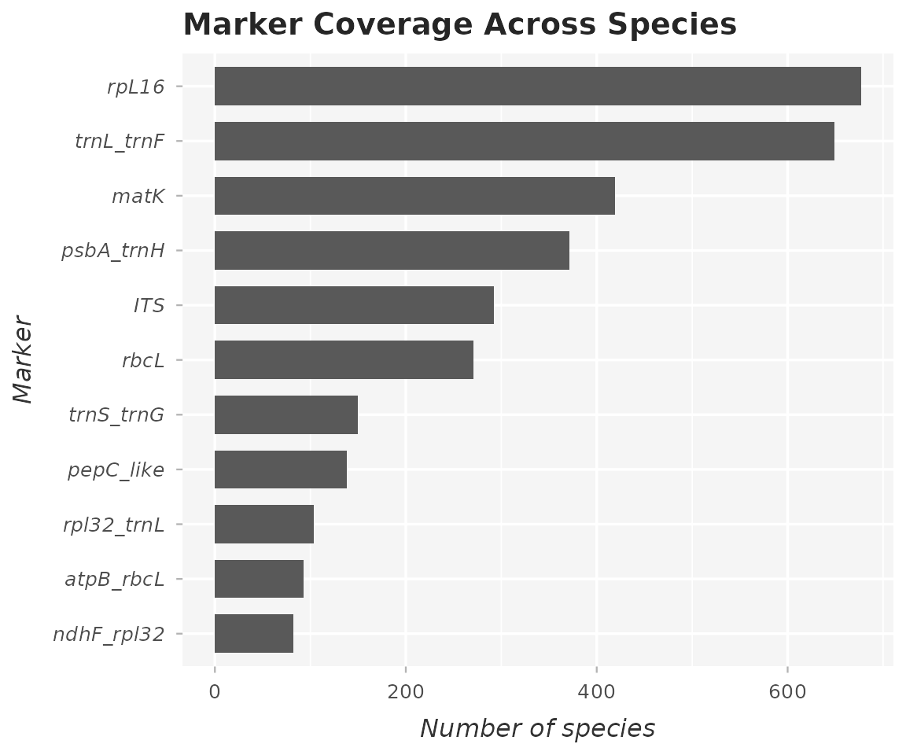
Figure 3: Marker Completeness
This histogram illustrates the distribution of molecular marker completeness across taxa included in the final phylogenetic dataset. The figure shows how many markers were successfully retained for each species after sequence filtering and quality control procedures.
Assessing marker completeness is essential for evaluating variation in molecular sampling among taxa and identifying potential biases associated with uneven locus representation. Species with reduced marker coverage may contain higher levels of missing data, which can influence phylogenetic resolution and downstream comparative analyses.
if("retained_markers" %in% names(species_summary_iucn)){
p3 <- ggplot(species_summary_iucn %>% filter(in_phylogeny == TRUE), aes(x = retained_markers)) +
geom_histogram(binwidth = 1, color = "white") +
scale_x_continuous(breaks = seq(1, 11, 1)) + theme_minimal(base_size = 12) +
labs(title = "Distribution of Marker Completeness", x = "Number of retained markers", y = "Number of species")
print(p3)
}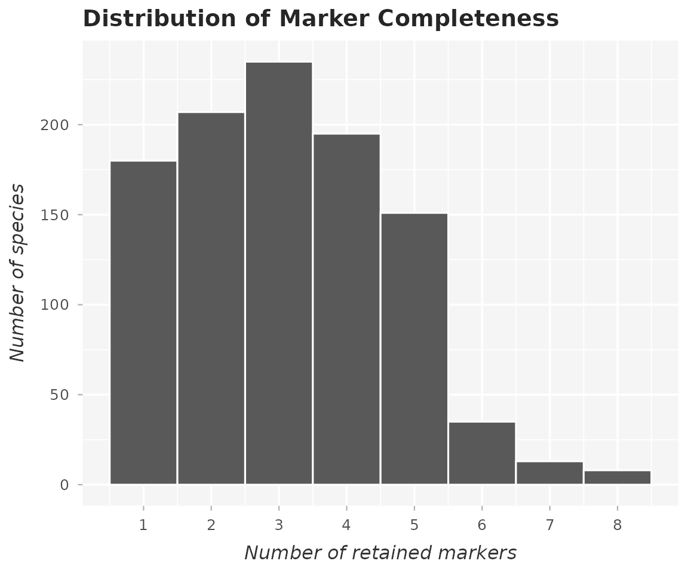
Figure 4: Marker Presence Heatmap
This heatmap displays the distribution of molecular marker availability across species included in the final phylogenetic dataset, indicating the presence or absence of sequence information for each locus. The visualization provides a detailed overview of missing data patterns among taxa and markers, allowing researchers to evaluate whether incomplete sampling is concentrated in specific lineages or genomic regions.
heatmap_data <- species_summary_iucn %>% filter(in_phylogeny == TRUE) %>% select(species, all_of(marker_cols)) %>%
pivot_longer(cols = all_of(marker_cols), names_to = "marker", values_to = "accession") %>% mutate(present = accession != "-")
p4 <- ggplot(heatmap_data, aes(x = marker, y = fct_rev(species), fill = present)) +
scale_fill_grey(start = 0.95, end = 0.25) + geom_tile() + theme_minimal(base_size = 10) +
labs(title = "Marker Presence Heatmap", x = "Marker", y = "Species") +
theme(axis.text.y = element_blank(), axis.ticks.y = element_blank(), axis.text.x = element_text(angle = 45, hjust = 1))
print(p4)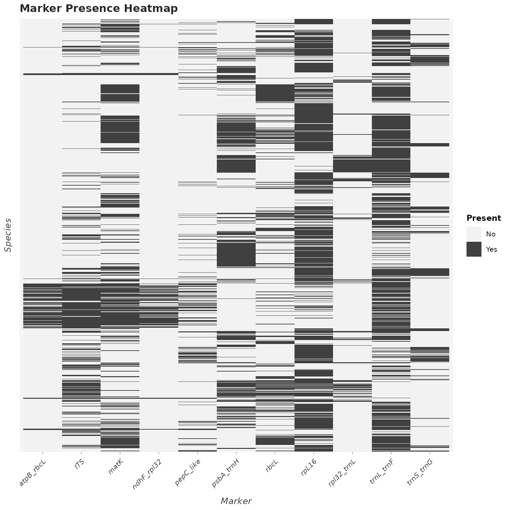
Figure 5: Supermatrix Structure
This figure illustrates the organization of the concatenated multilocus supermatrix by displaying the position and boundaries of each molecular marker within the final partition scheme.
# Only evaluate if the file exists
if (file.exists(system.file("extdata", "TABLE_marker_ranges.tsv", package = "PhyloCactus"))) {
TABLE_marker_ranges <- read_tsv(system.file("extdata", "TABLE_marker_ranges.tsv", package = "PhyloCactus"), show_col_types = FALSE)
if("marker" %in% names(TABLE_marker_ranges)) {
p5 <- ggplot(TABLE_marker_ranges) + geom_segment(aes(x = start, xend = end, y = marker, yend = marker), linewidth = 6) +
theme_minimal(base_size = 12) + labs(title = "Supermatrix Structure", x = "Alignment position", y = "Marker")
print(p5)
}
}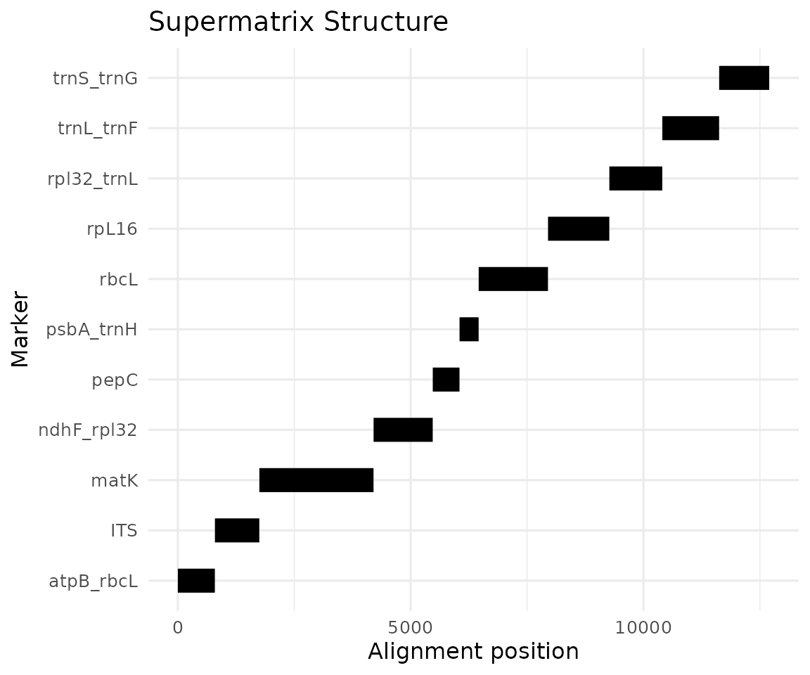
Figure 6: Marker Informativeness
We graph the number of parsimony informative sites against the alignment length for each marker, assessing the phylogenetic utility of each region.
if("parsimony_informative" %in% names(marker_stats)) {
p6 <- ggplot(marker_stats, aes(x = alignment_length, y = parsimony_informative, label = marker)) +
geom_point(size = 3) + geom_text(nudge_y = 20, size = 3) + theme_minimal(base_size = 12) +
labs(title = "Marker Informativeness", x = "Alignment length", y = "Parsimony informative sites")
print(p6)
}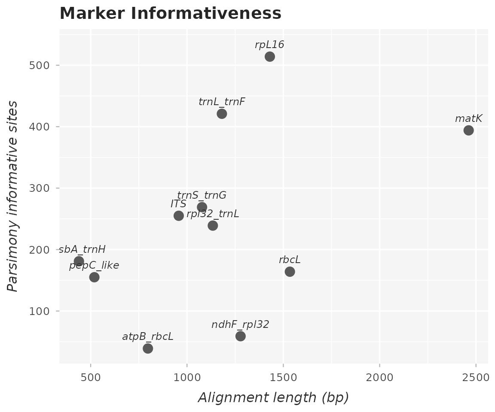
Figure 7: IUCN Categories
This bar chart summarizes the distribution of IUCN conservation categories among the ingroup species included in the final phylogenetic reconstruction.
The visualization quantifies the representation of threatened and non-threatened taxa across the evolutionary framework, including categories ranging from Least Concern (LC) to the highest extinction risk categories (Vulnerable, Endangered, and Critically Endangered). This overview provides an initial assessment of how conservation status is distributed across the sampled phylogenetic diversity and highlights the representation of threatened evolutionary lineages within the dataset.
if(any(species_summary_iucn$iucn_found, na.rm=TRUE)) {
TABLE_iucn_categories <- species_summary_iucn %>% filter(iucn_found == TRUE, in_phylogeny == TRUE, is_ingroup == TRUE) %>% count(iucn_category, iucn_category_name, sort = TRUE)
p7 <- ggplot(TABLE_iucn_categories, aes(x = reorder(iucn_category, n), y = n, fill = iucn_category)) +
PhyloCactus::scale_fill_iucn(name = "IUCN Category") + geom_col() + theme_minimal(base_size = 12) +
labs(title = "IUCN Categories (Ingroup Phylogeny)", x = "Category", y = "Number of species")
print(p7)
}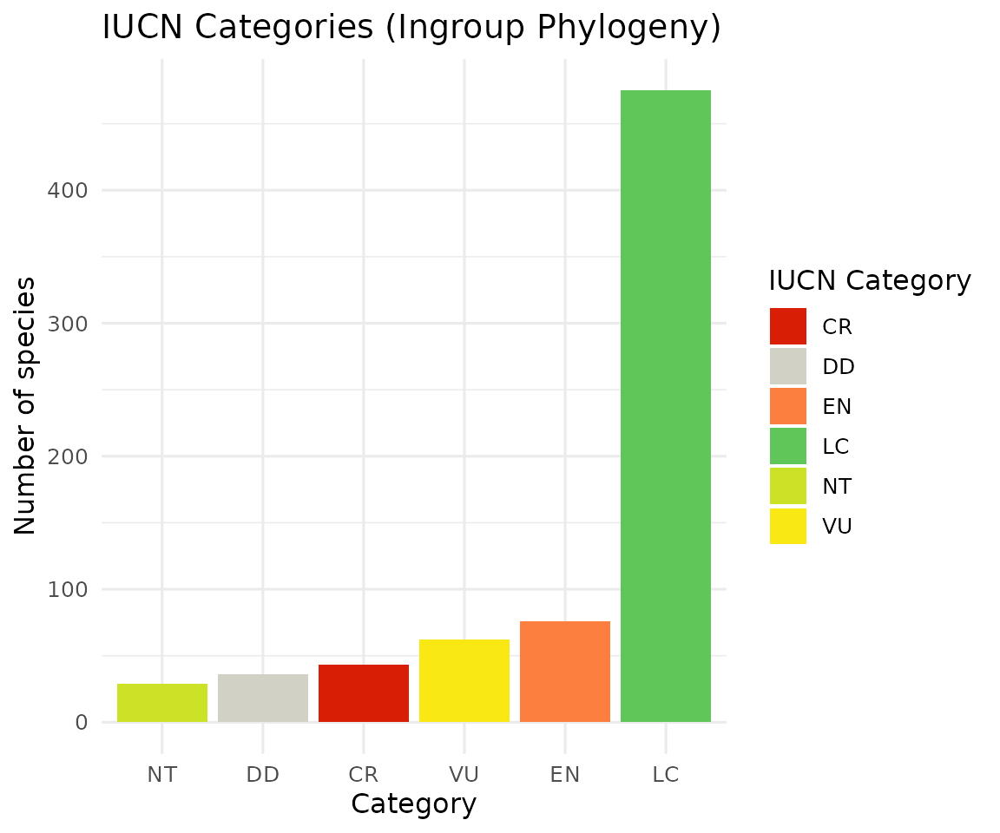
Figure 8: Completeness vs. IUCN Category
This plot compares molecular completeness against IUCN conservation categories, allowing us to evaluate if certain threat categories are systematically under-sequenced.
if(any(species_summary_iucn$iucn_found, na.rm=TRUE)) {
p8 <- ggplot(species_summary_iucn %>% filter(iucn_found == TRUE, in_phylogeny == TRUE, is_ingroup == TRUE), aes(x = iucn_category, y = pct_markers, fill = iucn_category)) +
geom_violin(trim = FALSE) + PhyloCactus::scale_fill_iucn(name = "IUCN Category") + geom_boxplot(width = 0.15, outlier.size = 0.5) +
theme_minimal(base_size = 12) + labs(title = "Molecular Completeness vs IUCN Category", x = "IUCN category", y = "Marker completeness (%)")
print(p8)
}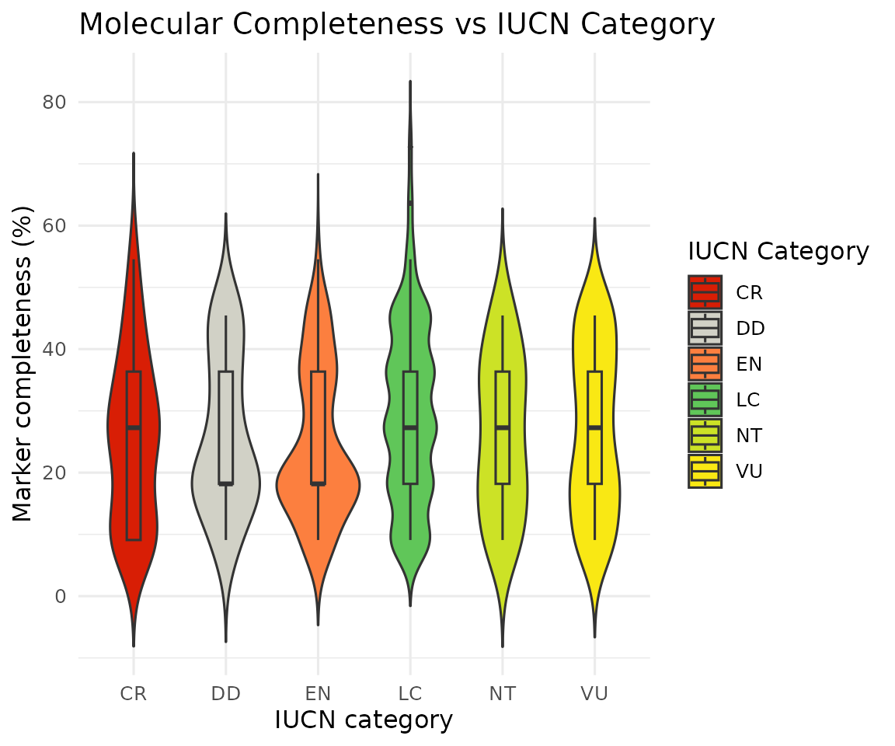
Figure 9: Endemism by Country
This figure summarizes the geographic distribution of endemic species represented in the final phylogenetic dataset by ranking countries according to the number of endemic taxa included in the analysis.
The visualization focuses exclusively on species incorporated into the phylogenetic framework and identified as endemic according to available conservation metadata. Because this summary is based on the available molecular and conservation records, it should be interpreted as a representation of sampled phylogenetic diversity rather than a complete estimate of national cactus endemism.
if(any(species_summary_iucn$iucn_is_endemic, na.rm=TRUE)) {
plot_data_endimism <- species_summary_iucn %>% filter(iucn_is_endemic == TRUE, in_phylogeny == TRUE, is_ingroup == TRUE) %>% separate_rows(iucn_endemic_locations, sep = "; ") %>% count(iucn_endemic_locations, sort = TRUE) %>% slice_max(n, n = 20)
p9 <- ggplot(plot_data_endimism, aes(x = reorder(iucn_endemic_locations, n), y = n)) + geom_col() + coord_flip() + theme_minimal(base_size = 12) +
labs(title = "Endemic Species by Country (Ingroup Phylogeny)", x = "Country", y = "Number of endemic species")
print(p9)
}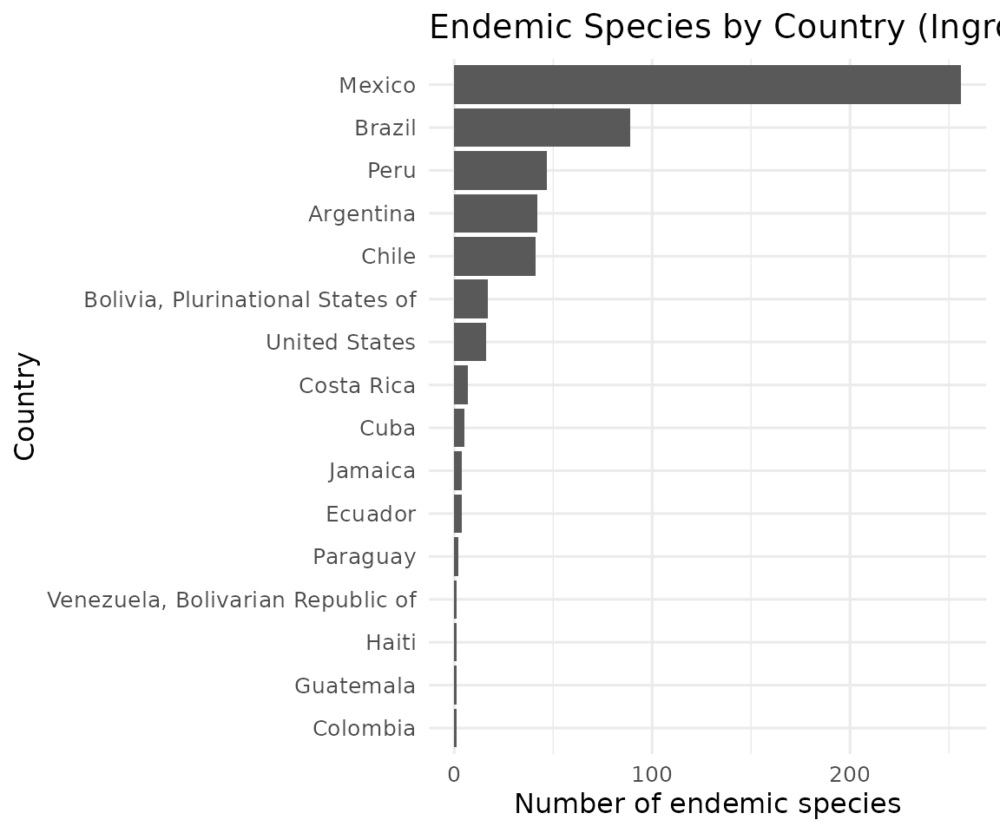
Figure 10: IUCN Categories by Country (Endemic)
This stacked bar chart summarizes the conservation status of endemic species across countries represented in the phylogenetic dataset, separating taxa according to their respective IUCN threat categories.
if(any(species_summary_iucn$iucn_found, na.rm=TRUE)) {
plot_iucn_country <- species_summary_iucn %>% filter(iucn_is_endemic == TRUE, in_phylogeny == TRUE, is_ingroup == TRUE, !is.na(iucn_endemic_locations)) %>% separate_rows(iucn_endemic_locations, sep = "; ") %>% count(iucn_endemic_locations, iucn_category)
top_countries <- plot_data_endimism$iucn_endemic_locations
plot_iucn_country <- plot_iucn_country %>% filter(iucn_endemic_locations %in% top_countries)
if(nrow(plot_iucn_country) > 0) {
p10 <- ggplot(plot_iucn_country, aes(x = factor(iucn_endemic_locations, levels = rev(top_countries)), y = n, fill = iucn_category)) +
geom_col() + coord_flip() + PhyloCactus::scale_fill_iucn(name = "IUCN Category") + theme_minimal(base_size = 12) +
labs(title = "Endemic Species by Country and IUCN Category", x = "Country", y = "Number of endemic species")
print(p10)
}
}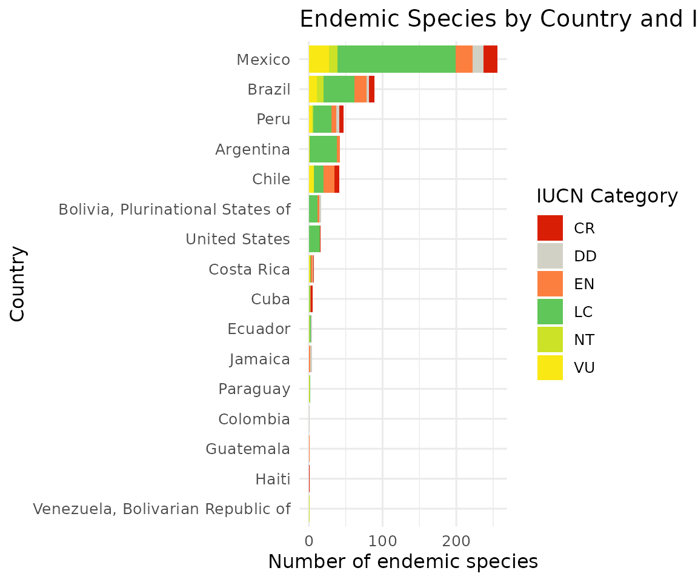
Figure 11 & 12: Threats and Habitats
These two figures summarize the most frequently identified threats and the primary ecological habitats for the species in our dataset.
if(any(!is.na(species_summary_iucn$iucn_threat_names))) {
plot_threats <- species_summary_iucn %>% filter(!is.na(iucn_threat_names), in_phylogeny == TRUE, is_ingroup == TRUE) %>% separate_rows(iucn_threat_names, sep = "; ") %>% count(iucn_threat_names, sort = TRUE) %>% slice_max(n, n = 15)
if(nrow(plot_threats) > 0) {
p11 <- ggplot(plot_threats, aes(x = reorder(iucn_threat_names, n), y = n)) + geom_col() + coord_flip() + theme_minimal(base_size = 12) +
labs(title = "Most Common Threats (Ingroup Phylogeny)", x = "Threat", y = "Number of species")
print(p11)
}
}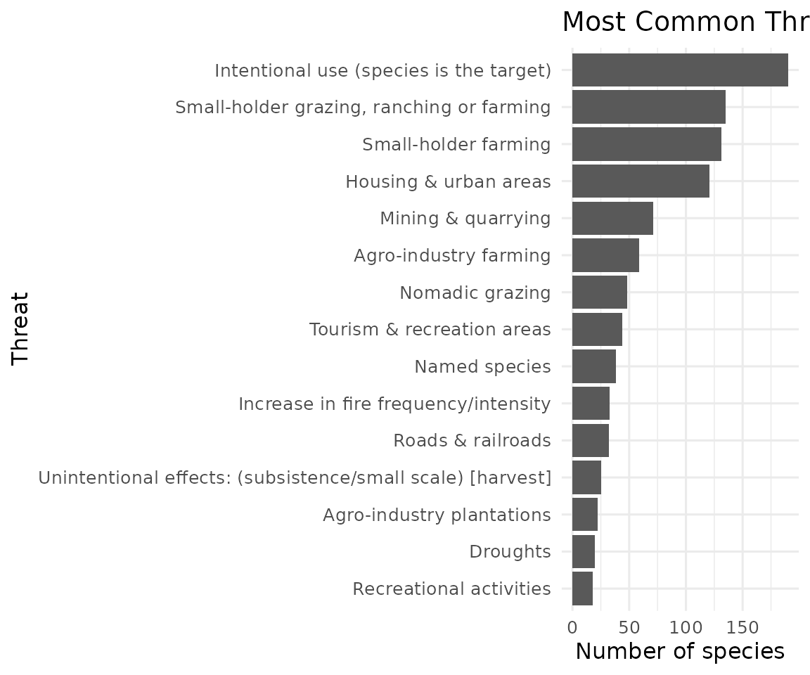
if(any(!is.na(species_summary_iucn$iucn_habitat_names))) {
plot_habitats <- species_summary_iucn %>% filter(!is.na(iucn_habitat_names), in_phylogeny == TRUE, is_ingroup == TRUE) %>% separate_rows(iucn_habitat_names, sep = "; ") %>% count(iucn_habitat_names, sort = TRUE) %>% slice_max(n, n = 15)
if(nrow(plot_habitats) > 0) {
p12 <- ggplot(plot_habitats, aes(x = reorder(iucn_habitat_names, n), y = n)) + geom_col() + coord_flip() + theme_minimal(base_size = 12) +
labs(title = "Most Common Habitats (Ingroup Phylogeny)", x = "Habitat", y = "Number of species")
print(p12)
}
}Module 12: Render Manuscript Figures
After completing phylogenetic inference, divergence time estimation,
and metadata integration, the final analytical stage consists of
generating visual representations of the evolutionary hypotheses
produced by PhyloCactus.
This module focuses on the graphical integration of two principal phylogenetic outputs generated throughout the pipeline: the maximum likelihood phylogeny, representing inferred evolutionary relationships with branch support values, and the time-calibrated chronogram, representing temporal diversification history obtained through penalized likelihood dating and summarized temporal bootstrap replicates.
Although PhyloCactus provides automated visualization
functions for routine exploration, this tutorial presents a transparent
workflow based on established phylogenetic visualization frameworks,
including ggtree, treeio, and
ape.
Visualization Strategy
The maximum likelihood tree is visualized using the constrained topology inferred during phylogenetic reconstruction. Branch support values obtained from transfer bootstrap expectation (TBE) analyses are mapped directly onto internal nodes, allowing researchers to evaluate the topological stability of inferred relationships among cactus lineages.
The dated chronogram is visualized using the consensus tree generated
from the temporal bootstrap replicates described in Module
10. Node age uncertainty is represented using the confidence
intervals summarized by TreeAnnotator. Although
TreeAnnotator reports these intervals using the terminology
“95% Highest Posterior Density (HPD)”, these values do not represent
Bayesian posterior probabilities. Within the PhyloCactus
framework, they correspond to confidence intervals derived from
variation among independently dated temporal bootstrap replicates.
Together, these visualizations provide complementary perspectives of cactus evolution by integrating phylogenetic uncertainty, divergence timing, and hierarchical taxonomic structure.
The following sections demonstrate how to generate the main manuscript figures and extended supplementary visualizations:
Figure 13: Maximum-Likelihood Tree with TBE Support
This plot displays the maximum likelihood phylogeny. Due to the high number of tips, this base figure is designed for exploratory inspection.
library(ggtree)
library(ape)
library(tidytree)
# -------------------------------------------------------------
# Figure 13: Maximum-Likelihood Tree with TBE Support
# -------------------------------------------------------------
message("Rendering Figure 13 (maximum-likelihood tree)...")
# Load the support tree evaluated in Module 9
supp_tree_file <- system.file("extdata", "cactus_support.raxml.support", package = "PhyloCactus")
if (file.exists(supp_tree_file) && nzchar(supp_tree_file)) {
ml_tree <- read.tree(supp_tree_file)
ml_tree <- ape::ladderize(ml_tree)
# Load constraints table required for annotation
constraints_csv_path <- system.file("extdata", "cactus_constraints.csv", package = "PhyloCactus")
if (file.exists(constraints_csv_path) && nzchar(constraints_csv_path)) {
constraints_tbl <- read_csv(constraints_csv_path, show_col_types = FALSE)
# Ensure tree node labels match Nnode
if (is.null(ml_tree$node.label)) {
ml_tree$node.label <- rep(NA_character_, ml_tree$Nnode)
}
MAIN_LEVEL4_VALUES <- c("Anacampseros", "Grahamia", "Talinopsis", "Leuenbergeria", "Pereskia", "Maihuenia", "Blossfeldia", "Opuntieae", "Cylindropuntieae", "Tephrocacteae", "Cacteae", "Core I", "Core II", "Copiapoa", "Calymmanthium", "Rhipsalis", "Portulaca", "Notocacteae", "BCT", "Rhipsalideae")
ML_MAIN_LAYER_SPECS <- tibble::tribble(
~reg_name, ~fontsize, ~barsize, ~offset, ~offset_text, ~fontface, ~sort_desc, ~angle, ~align,
"level_4_main", 2.5, 0.34, 0.010, 0.0038, "plain", TRUE, 0, TRUE,
"level_3", 3.5, 0.50, 0.170, 0.0055, "bold", TRUE, 270, TRUE,
"level_2", 4.0, 0.75, 0.220, 0.0100, "bold", TRUE, 270, TRUE,
"level_1", 4.5, 0.85, 0.270, 0.0100, "bold", TRUE, 270, TRUE
)
registry <- PhyloCactus::build_annotation_registry(
tree = ml_tree,
constraints_tbl = constraints_tbl,
main_level4_values = MAIN_LEVEL4_VALUES,
supp_level4_min_tips = 3L
)
# Parse numerical support and map it to visual classes
ml_tree_data <- tidytree::as_tibble(ml_tree) %>%
mutate(
support = suppressWarnings(as.numeric(label)),
support_label = ifelse(!is.na(support), sprintf("%.3f", support), NA_character_),
support_class = case_when(
support >= 0.90 ~ ">= 90",
support >= 0.70 ~ "70-89",
TRUE ~ "< 70"
),
support_class = factor(support_class, levels = c(">= 90", "70-89", "< 70"))
)
ml_tree_plot <- tidytree::as.treedata(ml_tree_data)
p_ml <- ggtree(ml_tree_plot, size = 0.3) +
theme_tree() +
geom_nodepoint(aes(fill = support_class), shape = 21, size = 2, stroke = 0.2, na.rm = TRUE) +
scale_fill_manual(
values = c(">= 90" = "white", "70-89" = "grey", "< 70" = "black"),
name = "TBE Support",
na.translate = FALSE
) +
theme(legend.position = "bottom")
# Apply complex formatting using original script logic
p_ml <- PhyloCactus::apply_clade_label_layers(p_ml, registry, ML_MAIN_LAYER_SPECS)
# Add expansion for large trees
xmax <- max(p_ml$data$x, na.rm = TRUE)
p_ml <- p_ml + coord_cartesian(xlim = c(0, xmax + xmax * 0.35), clip = "off") + theme(plot.margin = margin(12, 12, 12, 12))
print(p_ml)
}
}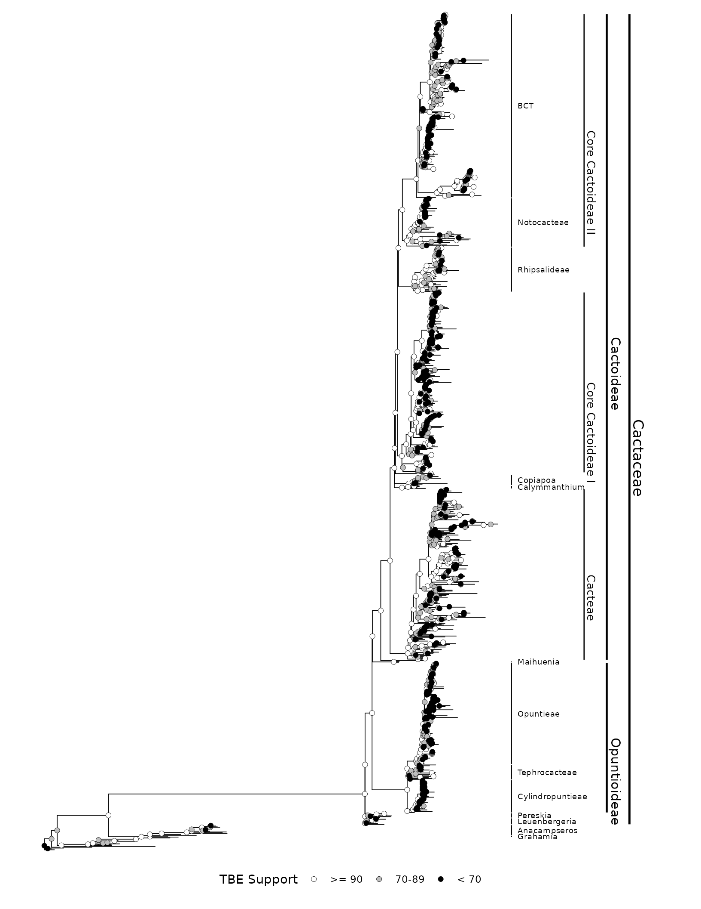
Figure 14: Extended Constrained ML Phylogeny
The following plot renders the complete maximum-likelihood tree without collapsing the nodes. Because of the large number of tips, this figure is formatted as an A0-sized poster. You can use the scrollbars below to explore the entire topology, seeing individual species placements and their respective TBE support.
# -------------------------------------------------------------
# Figure 14: Extended Constrained ML Phylogeny
# -------------------------------------------------------------
if (file.exists(supp_tree_file) && nzchar(supp_tree_file)) {
ML_SUPP_LAYER_SPECS <- tibble::tribble(
~reg_name, ~fontsize, ~barsize, ~offset, ~offset_text, ~fontface, ~sort_desc, ~angle, ~align,
"level_4_supp", 6, 0.60, 0.030, 0.0038, "plain", TRUE, 0, TRUE,
"level_3", 8, 0.65, 0.150, 0.0038, "bold", TRUE, 270, TRUE,
"level_2", 9, 0.70, 0.200, 0.0100, "bold", TRUE, 270, TRUE,
"level_1", 10, 0.80, 0.250, 0.0100, "bold", TRUE, 270, TRUE
)
p_ml_supp <- ggtree(ml_tree_plot, size = 0.2) +
theme_tree() +
geom_tiplab(size = 0.70, align = FALSE, linetype = "solid", linesize = 0.15, colour = "grey20") +
geom_nodelab(aes(label = support_label), size = 0.70, hjust = 0.7, colour = "black", na.rm = TRUE) +
theme(legend.position = "none")
p_ml_supp <- PhyloCactus::apply_clade_label_layers(p_ml_supp, registry, ML_SUPP_LAYER_SPECS)
xmax_supp <- max(p_ml_supp$data$x, na.rm = TRUE)
p_ml_supp <- p_ml_supp + coord_cartesian(xlim = c(0, xmax_supp + xmax_supp * 0.30), clip = "off") + theme(plot.margin = ggplot2::margin(12, 12, 12, 12))
# save plot
ggplot2::ggsave("9_Visualization/figures/Extended_ML_Phylogeny.pdf", plot = p_ml_supp, width = 36, height = 48, limitsize = FALSE)
}To explore the complete topology in high resolution, you can view and download the tree poster here:
⬇️ Download Annotated Maximum-Likelihood Phylogeny with TBE Support (PDF)
If you wish to export the annotated treedata object into
.tree (Nexus/BEAST format) to analyze in exterior software
such as FigTree interactively, you can export it via treeio:
annotated_treedata <- PhyloCactus::augment_treedata_with_registry(ml_tree_plot, registry)
treeio::write.beast(annotated_treedata, file = "9_Visualization/figures/annotated_ml_tree.tree")Alternatively, you can download the already computed
.treefile natively from our repository:⬇️ Download Annotated Maximum-Likelihood Phylogeny with TBE Support (.tree)
Figure 15: Time-Calibrated Chronogram
This plot presents the time-calibrated version of our phylogeny, overlaying estimated divergence times and their 95% Highest Posterior Density (HPD) ranges.
# -------------------------------------------------------------
# Figure 15: Time-Calibrated Chronogram with HPD intervals
# -------------------------------------------------------------
message("Rendering Figure 15 (Chronogram)...")
# Load the TreeAnnotator summary chronogram from Module 10
chrono_file <- system.file("extdata", "dated_summary_hpd.tree", package = "PhyloCactus")
if (file.exists(chrono_file) && nzchar(chrono_file)) {
chrono_beast <- treeio::read.beast(chrono_file)
constraints_csv_path <- system.file("extdata", "cactus_constraints.csv", package = "PhyloCactus")
if (file.exists(constraints_csv_path) && nzchar(constraints_csv_path)) {
constraints_tbl <- read_csv(constraints_csv_path, show_col_types = FALSE)
tree_phy <- as.phylo(chrono_beast)
if (is.null(tree_phy$node.label)) {
tree_phy$node.label <- rep(NA_character_, tree_phy$Nnode)
}
MAIN_LEVEL4_VALUES <- c("Anacampseros", "Grahamia", "Talinopsis", "Leuenbergeria", "Pereskia", "Maihuenia", "Blossfeldia", "Opuntieae", "Cylindropuntieae", "Tephrocacteae", "Cacteae", "Core I", "Core II", "Copiapoa", "Calymmanthium", "Rhipsalis", "Portulaca", "Notocacteae", "BCT", "Rhipsalideae")
CHRONO_MAIN_LAYER_SPECS <- tibble::tribble(
~reg_name, ~fontsize, ~barsize, ~offset, ~offset_text, ~fontface, ~sort_desc, ~angle, ~align,
"level_4_main", 2.5, 0.34, 0.010, 0.0038, "plain", TRUE, 0, TRUE,
"level_3", 3.5, 0.50, 0.170, 0.0055, "bold", TRUE, 270, TRUE,
"level_2", 4.0, 0.75, 0.220, 0.0100, "bold", TRUE, 270, TRUE,
"level_1", 4.5, 0.85, 0.270, 0.0100, "bold", TRUE, 270, TRUE
)
registry_chrono <- PhyloCactus::build_annotation_registry(
tree = tree_phy,
constraints_tbl = constraints_tbl,
main_level4_values = MAIN_LEVEL4_VALUES,
supp_level4_min_tips = 3L
)
p_chrono <- ggtree(chrono_beast, size = 0.3) +
theme_tree2() +
geom_range(range = 'height_0.95_HPD', color = 'gray60', alpha = 0.4, linewidth = 1.5) +
theme_tree()
p_chrono <- PhyloCactus::apply_clade_label_layers(p_chrono, registry_chrono, CHRONO_MAIN_LAYER_SPECS)
p_chrono <- PhyloCactus::add_chronogram_axis(p_chrono, tree_phy, by = 5, digits = 0L, segment_size = 3, title_margin_top = 30)
xmax <- max(p_chrono$data$x, na.rm = TRUE)
p_chrono <- p_chrono + coord_cartesian(xlim = c(0, xmax + xmax * 0.35), clip = "off") + theme(plot.margin = margin(12, 12, 12, 12))
print(p_chrono)
}
}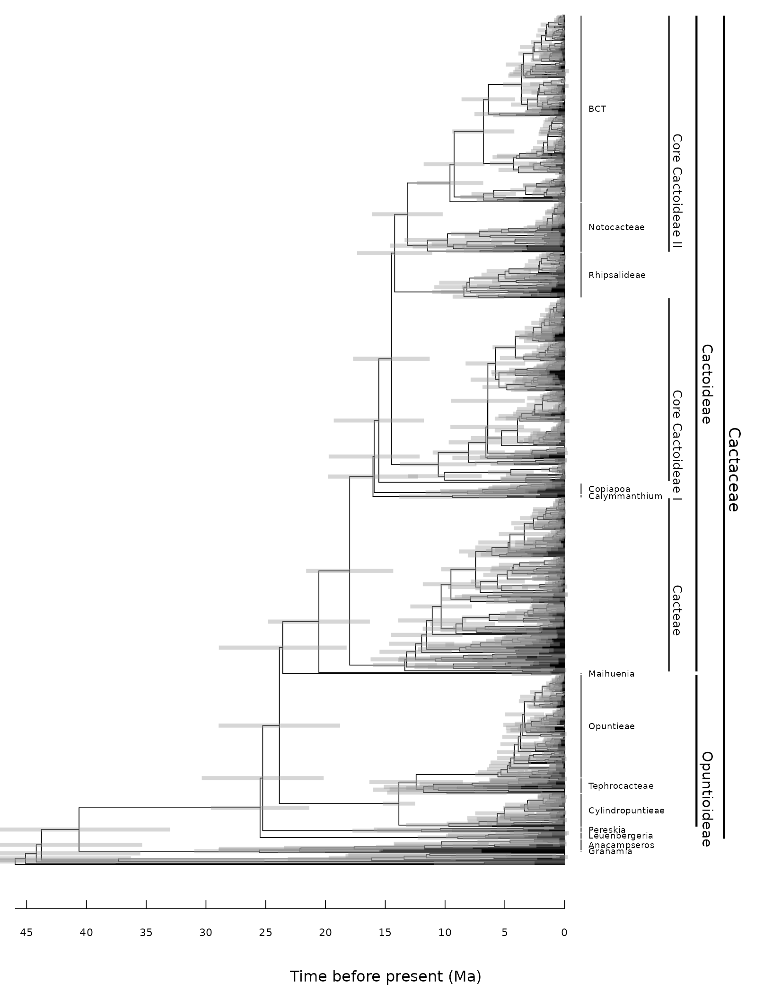
Figure 16: Extended Time Calibrated Chronogram
This plot displays the complete uncollapsed treePL
chronogram. Similar to the maximum-likelihood tree, it is presented in
A0 dimensions so that all species-level temporal estimates, including
their 95% Highest Posterior Density (HPD) bars, are visible. Scroll to
explore the precise ages of all clades.
# -------------------------------------------------------------
# Figure 16: Extended Time-Calibrated Chronogram
# -------------------------------------------------------------
if (file.exists(chrono_file) && nzchar(chrono_file)) {
CHRONO_SUPP_LAYER_SPECS <- tibble::tribble(
~reg_name, ~fontsize, ~barsize, ~offset, ~offset_text, ~fontface, ~sort_desc, ~angle, ~align,
"level_4_supp", 6, 0.60, 0.030, 0.0038, "plain", TRUE, 0, TRUE,
"level_3", 8, 0.65, 0.150, 0.0038, "bold", TRUE, 270, TRUE,
"level_2", 9, 0.70, 0.200, 0.0100, "bold", TRUE, 270, TRUE,
"level_1", 10, 0.80, 0.250, 0.0100, "bold", TRUE, 270, TRUE
)
p_chrono_supp <- ggtree(chrono_beast, size = 0.2) +
theme_tree2() +
geom_tiplab(size = 0.85, align = FALSE, linetype = "solid", linesize = 0.15, colour = "grey20") +
geom_range(range = 'height_0.95_HPD', color = 'gray60', alpha = 0.4, linewidth = 0.8) +
theme_tree()
p_chrono_supp <- PhyloCactus::apply_clade_label_layers(p_chrono_supp, registry_chrono, CHRONO_SUPP_LAYER_SPECS)
p_chrono_supp <- PhyloCactus::add_chronogram_axis(p_chrono_supp, tree_phy, by = 5, digits = 0L, segment_size = 10, title_margin_top = 28, bar_size = 30)
xmax_chrono_supp <- max(p_chrono_supp$data$x, na.rm = TRUE)
p_chrono_supp <- p_chrono_supp + coord_cartesian(xlim = c(0, xmax_chrono_supp + xmax_chrono_supp * 0.30), clip = "off") + theme(plot.margin = ggplot2::margin(12, 12, 32, 12))
# save plot
ggplot2::ggsave("9_Visualization/figures/Extended_Chronogram.pdf", plot = p_chrono_supp, width = 36, height = 48, limitsize = FALSE)
}To explore the precise ages of all clades in high resolution, you can view and download the chronogram poster here:
If you wish to export the annotated chronogram treedata
object into .tree (Nexus/BEAST format) to analyze in
exterior software such as FigTree interactively, you can export it via
treeio:
annotated_chrono <- PhyloCactus::augment_treedata_with_registry(chrono_beast, registry_chrono)
treeio::write.beast(annotated_chrono, file = "9_Visualization/figures/annotated_chronogram.tree")Alternatively, you can download the already computed
.treefile natively from our repository:
Next Steps
At this stage, phylogenetic visualization and conservation metadata
integration have been successfully completed. The resulting outputs
provide a comprehensive representation of the evolutionary framework
generated by PhyloCactus, including the inferred maximum
likelihood topology, the time calibrated chronogram, molecular sampling
completeness, and associated conservation information.
The next stage focuses on phylogenetic validation and comparative analyses, where the robustness of the focal phylogenetic hypothesis will be evaluated against previously published evolutionary frameworks and alternative topological hypotheses.
Using quantitative tree comparison approaches, including Robinson-Foulds distances and multidimensional scaling (MDS), the following tutorial will assess the degree of topological agreement among alternative phylogenetic hypotheses, identify regions of phylogenetic uncertainty, and evaluate how differences in taxon sampling and analytical strategies influence the recovered evolutionary relationships.
Continue to Tutorial 4: Phylogenetic Validation and Comparative Analyses
References
- Amaral et al., 2022. Spatial patterns of evolutionary diversity in Cactaceae show low ecological representation within protected areas. Biological Conservation, 273. https://doi.org/10.1016/j.biocon.2022.109677
- Thompson, et al., 2024. Identifying the multiple drivers of cactus diversification. Nature Communications, 15(1). https://doi.org/10.1038/s41467-024-51666-2